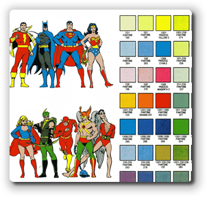
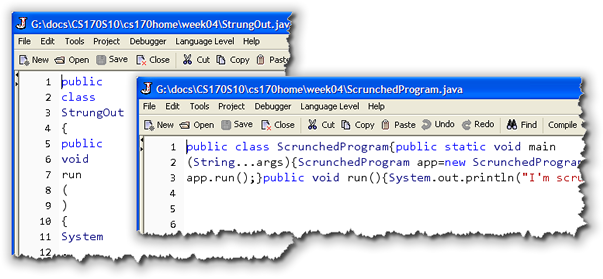
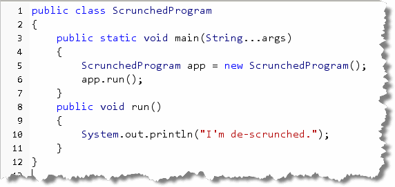
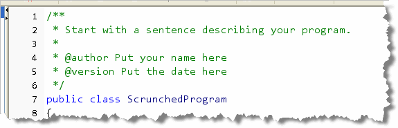
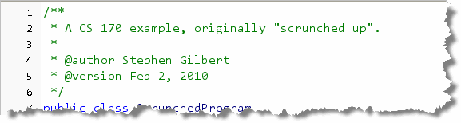
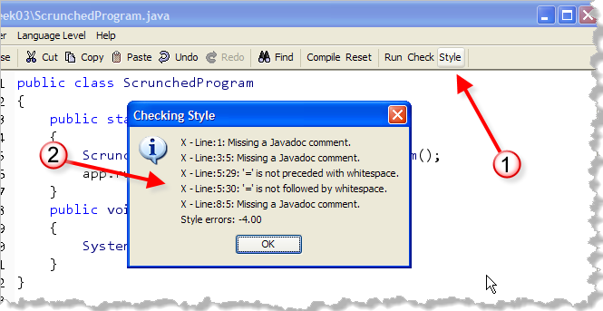
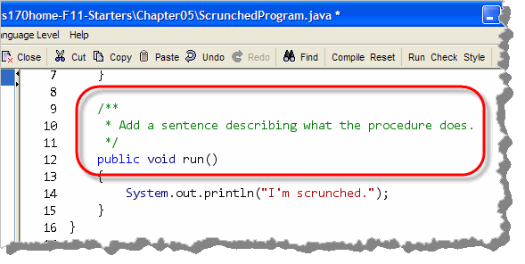

In addition to correctness, your programming quizzes are also graded for programming style. In the rest of this section, I'll go over the CS 170 style guidelines that will be used in this class.The guidelines that we'll be using are a version of one that has been used with good success both in industrial practice and for college courses. It is a modification of the style guide written by Cay Horstmann at San Jose State University.
A style guide is a set of mandatory requirements for layout and formatting. Uniform style makes it easier for you to read code from your instructor and classmates, just like a cartooning style-guide, like the one used by D.C. Comics, makes sure that all of the inkers and painters know to make Superman's cape red, and Green Lantern's tights, well...., green.
A style guide makes you a more productive programmer because it reduces gratuitous choice. If you don't have to make choices about trivial matters, you can spend your energy on the solution of real problems.
The CS 170 Style Rules
In these guidelines, several constructs are plainly outlawed. That doesn't mean that programmers using them are evil or incompetent. It does mean that the constructs are not essential and can be expressed just as well or even better with other language constructs.
If you already have programming experience, in Java or another language, you may be initially uncomfortable at giving up some fond habits. However, it is a sign of professionalism to set aside personal preferences in minor matters and to compromise for the benefit of your group.
These guidelines are necessarily somewhat dull. They also mention features that you may not yet have seen in class. Here are the most important highlights:
- Tabs are set every four spaces.
- Variable and method names are lowercase, with occasional upperCase characters in the middle.
- Class names start with an Uppercase letter
- Constant names are UPPERCASE, with an occasional UNDER_SCORE.
- There are spaces after keywords and surrounding binary operators.
- Braces must line up vertically and code must be indented in a block.
- No magic numbers may be used.
- Every method must have a Javadoc comment.
- Use, at most, 30 lines of code per method.
- All non-
finalinstance variables must beprivate.
Before we get to the specifics, let's take a look at some of the general style issues you'll face.
General Style Issues
Let's look at a couple of style issues you'll need to understand when you write your own Java programs. To do that, I want you to open both the programs StrungOut.java and ScrunchedProgram.java and we'll see how to fix them. (You'll find them in the code folder for this chapter.)
Java is a free-form language. That means that statements
may span several lines, or may all be (generally)
run together. like these two examples:

You probably don't want to write code like this, however, and you certainly don't want to read code written using this style. And, even if you do, I don't want to read code that looks like this!. Since at least 10% of each quiz grade is based on correct style, you'll probably want to learn how to fix it.You should use whitespace such as blank lines and indenting to improve the readability of your programs, not reduce the readability. Try to group related statements together into "paragraphs", and separate such groups from unrelated groups of statement by inserting blank lines and comments.
If you have a "messed up" file, like the two shown here,
start by looking for the braces and semi-colons. Each
brace ({ }) should appear on its
own line. After every semi-colon, you should have a
new line.
Fortunately, the DrJava IDE makes formatting your code somewhat easier. When you press Enter on a line containing a brace, it will try to align the brace correctly. In addition, after you have the program broken into lines, just select the entire program and then click Indent Lines from the Edit menu. This won't fix all of your coding problems but it will help get you started with the correct code layout.
Go ahead and apply the standard formatting to both files so you
can see that it works. Here's what ScrunchedProgram.java looks like after being
"de-scrunched" using DrJava's auto-indent feature:

Auto-indent will take care of 90% of your style problems. For the rest, you'll have to look at some of the style rules in detail. Let's start with file rules and comments.Source Files and Classes
Each Java program is a collection of one or more source files. The executable program is obtained by compiling these files. Organize the material in each file as follows:
packagestatement (we won't use these in CS 170)importstatements- A comment explaining the purpose of this file
- A
publicclass - Other classes, if appropriate
The comment explaining the purpose of this file should be in the format
recognized by the javadoc utility. Start with a
/** and use the @author and
@version tags to supply your name and the
date when you started the program.
Here's a "template" you can follow with placeholders for
this information.

To get started, just type the opening/** and press Enter
in DrJava and it will put start a new line with a *,
where you can add the description:
in a placeholder for you.
Go ahead and add the file-comment placeholder to both Scrunched and StrungOut. Then modify the comments you see there so that it looks something like this:

Make sure that the first sentence ends with a period, and that you've included both the version and author tags. These must be spelled correctly, even though they are inside a comment. The Checkstyle program checks to make sure you've actually filled in the information, in case you're wondering.
Checking Your Style
Before we look at the rest of the style rules,
which are kind of tedious and boring, let's look at
how you can check your code for style.

Instead of running a unit test, like you did for correctness, you'll use a style checker program named Checkstyle. To run Checkstyle, just press the Style button on the toolbar.The Results
Once Checkstyle checks you code, it will list each line that has a problem according to the rules. Notice that in addition to the total style errors found, Checkstyle will show you the row and column in your source code where the error occurs.
After you've corrected the errors, save and compile, and then click the Check button to check your file once more.
The Rest of the Rules
The rest of this lesson contains details on the various style rules. You'll probably want to bookmark it so you can come back and check a specific detail while you're completing an assignment.
Classes
We'll usually put each class in its own file, so you won't need a class comment; the file comment will do. However, if you do have multiple classes in a file, each class should be preceded by a class comment explaining its purpose.
Use the following order for items in the class:
- Static Fields (
public staticonly) - Instance Fields
- Constructors
- Instance Methods
- Static Methods
- Inner classes
Leave a blank line after every method.
All non-final instance variables must be
private. Methods and final
instance variables can be either public or
private, as appropriate.
Methods that are going to be tested must be
public, not private though.
All features must be tagged public,
private, or protected.
Do not use the default visibility (that is, package visibility).
Methods
Every method should start with a comment in
Javadoc format. Place your cursor on the line immediately before
the method heading and type /**
and press Enter. Press enter a few times, and then
close the comment. If you go head and try it out now on
the methods in Scrunched and StrungOut.
The results should look something like this (using the run()
method as an example):

Replace the placeholder comments with your own. Make sure you have at least one sentence, and that it ends with a period.Here's an example of a more complex method comment:
/**
Convert calendar date into Julian day.
Note: This algorithm is from Press et al., Numerical Recipes
in C, 2nd ed., Cambridge University Press, 1992
@param day day of the date to be converted
@param month month of the date to be converted
@param year year of the date to be converted
@return the Julian day number that begins at noon of the
given calendar date.
*/
public static int dat2jul(int day, int month, int year)
{
. . .
}
Methods must have at most 30 lines of code. The method header, comments, blank lines, and lines containing only braces are not included in this count. This rule forces you to break up complex computations into separate methods.
Variables and Constants
Do not define all variables at the beginning of a block:
{
double xold; // Don't
double xnew;
boolean more;
. . .
}
Instead, define each variable just before it is used for the first time:
{
. . .
double xold = Integer.parseInt(input);
boolean more = false;
while (more)
{
double xnew = (xold + a / xold) / 2; // OK
. . .
}
. . .
}
Do not define two variables on the same line:
int dimes = 0, nickels = 0; // Don't
Instead, use two separate definitions:
int dimes = 0; // OK
int nickels = 0;
In Java, constants must be defined with the keyword
final.
If the constant is used by multiple methods, declare it as
static final.
Do not use magic numbers! A magic number is a numeric constant embedded in code, without a constant definition. Any number except -1, 0, 1, and 2 is considered magic:
if (p.getX() < 300) // Don't
Use final variables instead:
final double WINDOW_WIDTH = 300;
. . .
if (p.getX() < WINDOW_WIDTH) // OK
Even the most reasonable cosmic constant is going to change one day. You think there are 365 days per year? Your customers on Mars are going to be pretty unhappy about your silly prejudice. Make a constant
public static final int DAYS_PER_YEAR = 365;
so that you can easily produce a Martian version without trying to find all the 365s, 364s, 366s, 367s, and so on, in your code.
When declaring array variables, group the []
with the type, not the variable.
int[] values; // OK
int values[]; // Ugh--this is an ugly holdover from C
Control Flow
Avoid the "if ... if ... else"
trap. The code
if ( ... )
if ( ... ) ...;
else ...;
will not do what the indentation level suggests, and it can take hours
to find such a bug. Always use an extra pair of { ...
} when dealing with "if ... if
... else":
if ( ... )
{
if ( ... ) ...;
} // {...} are necessary
else ...;
if ( ... )
{
if ( ... ) ...;
else ...;
} // {...} not necessary, but they don't hurt
The for Statement
Use for loops only when a variable runs from
somewhere to somewhere with some constant increment/decrement:
for (int i = 0; i < a.length; i++)
System.out.println(a[i]);
Do not use the for loop for weird constructs such as
for (a = a / 2; count < ITERATIONS; System.out.println(xnew)) ; // Don't
Make such a loop into a while loop. That way, the sequence
of instructions is much clearer.
a = a / 2;
while (count < ITERATIONS) // OK
{ . . .
System.out.println(xnew);
}
Lexical Issues
The following rules specify when to use upper- and lowercase letters in identifier names.
- All variable and method names and all data fields of
classes are in lowercase (maybe with an occasional
upperCase in the middle); for example,
firstPlayer. - All constants are in uppercase (maybe with an occasional
UNDER_SCORE); for example,
CLOCK_RADIUS. - All class and interface names start with uppercase and are
followed by lowercase letters (maybe with an occasional
UpperCase letter); for example,
BankTeller.
Names must be reasonably long and descriptive.
Use firstPlayer instead of fp.
No drppng f vwls. Local variables that are fairly routine can
be short (ch, i) as long as
they are really just boring holders for an input character, a loop
counter, and so on. Also, do not use ctr,
c, cntr, cnt,
c2 for variables in your method. Surely these
variables all have specific purposes and can be
named to remind the reader of them (for example,
current, next, previous,
result, . . . ).
Indentation and White Space
Use tab stops every four columns. (The DrJava editor is alreay set up like this.)
Use blank lines freely to separate parts of a method that are logically distinct.
Use a blank space around every binary operator:
x1 = (-b - Math.sqrt(b * b - 4 * a * c)) / (2 * a); // Good
x1=(-b-Math.sqrt(b*b-4*a*c))/(2*a);//Bad
Leave a blank space after (and not before) each comma or
semicolon. Do not leave a space before or after a parenthesis
or bracket in an expression. Leave spaces around the
( . . . ) part of an if,
while, for, or catch
statement.
if (x == 0) y = 0;
f(a, b[i]);
Every line must fit on 80 columns. (DrJava allows you to specify where the right-hand column should be and displays a line in the editor for you.) If you must break a statement, add an indentation level for the continuation:
a[n] = ..................................................
+ .................;
If the condition in an if or while
statement must be broken, be sure to brace the body in,
even if it consists of only one statement:
if ( .........................................................
&& ..................
|| .......... )
{
. . .
}
If it weren't for the braces, it would be hard to separate the continuation of the condition visually from the statement to be executed.
Braces
Opening and closing braces must line up, either horizontally or vertically:
while (i < n) { System.out.println(a[i]); i++; }
while (i < n)
{
System.out.println(a[i]);
i++;
}
Some programmers don't line up vertical braces but place the
{ behind the key word:
while (i < n) { // DON'T DO THIS
System.out.println(a[i]);
i++;
}
Doing so makes it hard to check that the braces match.